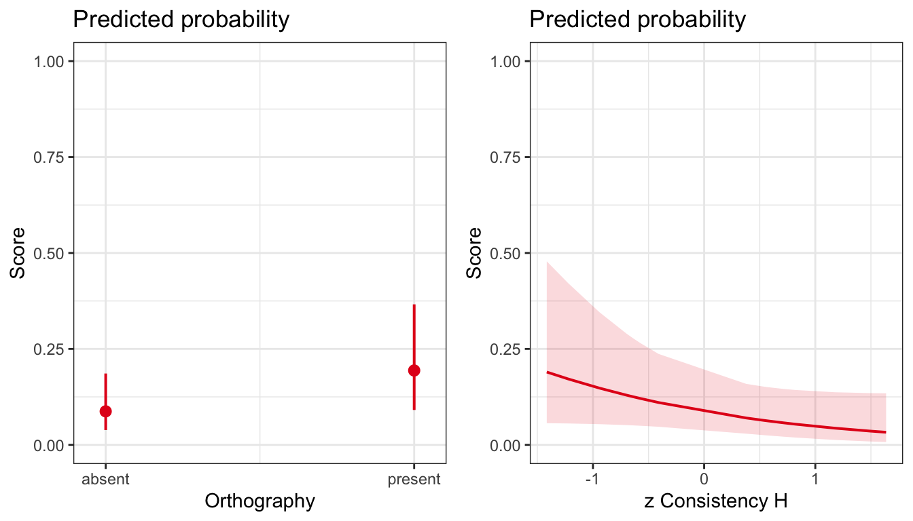

6 Introduction to Generalized Linear Mixed-effects Models
6.1 Motivations: working with categorical loutcomes
We have been discussing how we can use Linear Mixed-effects models to analyze multilevel structured data, the kind of data that we commonly acquire in experimental psychological studies, for example, when our studies have repeated measures designs. The use of Linear Mixed-effects models is appropriate where the outcome variable is a continuous numeric variable like reaction time. In this chapter, we extend our understanding and skills by moving to examine data where the outcome variable is categorical: this is a context that requires the use of Generalized Linear Mixed-effects Models (GLMMs).
We will begin by looking at the motivations for using GLMMs. We will then look at a practical example of a GLMM analysis, in an exploration in which we shall reveal some of the challenges that can arise in such work. The R code to do the modeling is very similar to the code we have used before. The way we can understand the models is also similar but with one critical difference. We start to understand that difference here.
6.2 The key idea to get us started
Categorical outcomes cannot be analyzed using linear models, in whatever form, without having to make some important compromises.
You need to do something about the categorical nature of the outcome.
6.3 Targets
In this chapter, we look at Generalized Linear Mixed-effects Models (GLMMs): we can use these models to analyze outcome variables of different kinds, including outcome variables like response accuracy that are coded using discrete categories (e.g. correct vs. incorrect). Our aims are to:
- Recognize the limitations of alternative methods for analyzing such outcomes, ?sec-tradition-limitations.
- Understand practically the reasons for using GLMMs when we analyze discrete outcome variables, Section 6.8.1.
- Practice running GLMMs with varying random effects structures.
- Practice reporting the results of GLMMs, including through the use of model plots.
6.4 Study guide
I have provided a collection of materials you can use. Here, I explain what they are and how I suggest you use them.
1. Video recordings of lectures
1.1. I have recorded a lecture in three parts. The lectures should be accessible by anyone who has the link.
1.2. I suggest you watch the recordings then read the rest of this chapter. The lectures provide a summary of the main points.
2. Chapter: 04-glmm
2.1. I have written this chapter to discuss the main ideas and set out the practical steps you can follow to start to develop the skills required to work with categorical outcomes data using GLMMs.
2.2. The practical elements include data tidying, visualization and analysis steps.
2.3. You can read the chapter, run the code, and do the exercises.
- Read in the example dataset.
- Experiment with the .R code used to work with the example data.
- Run GLMMs of demonstration data.
- Run GLMMs of alternate data sets.
- Review the recommended readings (Section 6.13).
3. Practical workbook materials
3.1 In the following sections, I describe the practical steps, and associated resources, you can use for your learning.
6.5 The data we will work with: the Ricketts word learning study
We will be working with data collected for a study investigating word learning in children, reported by Ricketts, Dawson, and Davies (2021). You will see that the study design has both a repeated measures aspect because each child is asked to respond to multiple stimuli, and a longitudinal aspect because responses are recorded at two time points. Because responses were observed to multiple stimuli for each child, and because responses were recorded at multiple time points, the data have a multilevel structure. These features require the use of mixed-effects models for analysis.
We will see, also, that the study involves the factorial manipulation of learning conditions. This means that, when you see the description of the study design, you will see embedded in it the 2 x 2 factorial design beloved of psychologists. You will be able to generalize from our work this week to many other research contexts where psychologists conduct experiments in which conditions are manipulated according to a factorial design.
However, our focus here is on the fact that the outcome for analysis is the accuracy of the responses made by children to word targets in a spelling task. The categorical nature of accuracy as an outcome is the reason why we now turn to use Generalized Linear Mixed-effects Models.
6.5.1 Study information
I am going to present the study information in some detail, in part, to enable you to make sense of the analysis aims and results and, in part, so that we can simulate results reporting in a meaningful context.
6.5.1.1 Introduction: the background for the study
Vocabulary knowledge is essential for processing language in everyday life and it is vital that we know how to optimize vocabulary teaching. One strategy with growing empirical support is orthographic facilitation: children and adults are more likely to learn new spoken words that are taught with their orthography (visual word forms; for a systematic review, see Colenbrander, Miles & Ricketts, 2019). Why might orthographic facilitation occur? Compared to spoken inputs, written inputs are less transient across time and less variable across contexts. In addition, orthography is more clearly marked (e.g., the ends of letters and words) than the continuous speech stream. Therefore, orthographic forms may be more readily learned than phonological forms, providing a more effective ‘anchoring device’ (Ehri, 2014; Krepel, de Bree, & de Jong, 2020), or hook, on which to hang semantic information.
Ricketts et al. (2021) investigated how school-aged children learn words. We conducted two studies in which children learned phonological forms and meanings of 16 polysyllabic words in the same experimental paradigm. To test whether orthographic facilitation would occur, half of the words were taught with access to the orthographic form (orthography present condition) and the other half were taught without orthographic forms (orthography absent condition). In addition, we manipulated the instructions that children received: approximately half of the children were told that some words would appear with their written form (explicit group); the remaining children did not receive these instructions (incidental group). Finally, we investigated the impact of spelling-sound consistency of word targets for learning, by including words that varied continuously on a measure of pronunciation consistency (after Mousikou, Sadat, Lucas, & Rastle, 2017).
The quality of lexical representations was measured in two ways. A cuing hierarchical response task (definition, cued definition, recognition) was used to elicit semantic knowledge from the phonological forms, providing a fine-grained measure of semantic learning. A spelling task indexed the extent of orthographic learning for each word. We focus on the analysis of the spelling task responses.
Ricketts et al. (2021) reported two studies. We focus on Study 1, in which Ricketts et al. measured knowledge of newly learned words at two intervals: first one week and then, again, eight months after training. Longitudinal studies of word learning are rare and this is the first longitudinal investigation of orthographic facilitation.
We addressed three research questions.
- Does the presence of orthography promote greater word learning?
- We predicted that children would demonstrate greater orthographic learning for words that they had seen (orthography present condition) versus not seen (orthography absent condition).
- Will orthographic facilitation be greater when the presence of orthography is emphasized explicitly during teaching?
- We expected to observe an interaction between instructions and orthography, with the highest levels of learning when the orthography present condition was combined with explicit instructions.
- Does word consistency moderate the orthographic facilitation effect?
- For orthographic learning, we expected that the presence of orthography might be particularly beneficial for words with higher spelling-sound consistency, with learning highest when children saw and heard the word, and these codes provided overlapping information.
6.5.1.2 Design
Children were taught 16 novel words in a \(2 \times 2\) factorial design. The presence of orthography (orthography absent vs. orthography present) was manipulated within participants: for all children, eight of the words were taught with orthography present and eight with orthography absent. Instructions (incidental vs. explicit) were manipulated between participants such that children in the explicit condition were alerted to the presence of orthography whereas children in the incidental condition were not.
6.5.1.3 Participants
In Study 1, 41 children aged 9-10 years completed the word learning task and completed semantic and orthographic assessments one week after learning (Time 1), and eight months later (Time 2). We tested children from one socially mixed school in the South-East of England (\(M_{age} = 9.95, SD = .53\)).
6.5.1.4 Stimulus materials
Stimuli comprised 16 polysyllabic words, all of which were nouns. We indexed consistency at the whole word level using the H uncertainty statistic (after Mousikou et al., 2017; Treiman, Mullennix, Bijeljac-Babic, & Richmond-Welty, 1995). An H value of 0 would indicate a consistent item (all participants producing the same pronunciation), with values \(>0\) indicating greater inconsistency (pronunciation variability) with increasing magnitude.
6.5.1.5 Procedure
A ‘pre-test’ was conducted to establish participants’ knowledge of the stimulus words before i.e. pre- training was administered. Then, each child was seen for three 45-minute sessions to complete training (Sessions 1 and 2) and post-tests (Session 3).
In Study 1, longitudinal post-test data were collected because children were post-tested at two time points. (Here, we refer to ‘post-tests’ as the tests done to test learning, after i.e. post training.) Children were given post-tests in Session 3, as noted: this was Time 1. They were then given post-tests again, about eight months later at Time 2.
6.5.1.6 Outcome (dependent) variables
The Orthographic post-test was used to examine orthographic knowledge after training. Children were asked to spell each word to dictation and spelling productions were transcribed for scoring. For the purposes of our learning in Week 20, we focus on the accuracy of responses. Each response made by a child to a target word was coded as correct or incorrect.
Note that a more sensitive outcome measure of orthographic knowledge was also taken. Responses were also scored using a Levenshtein distance measure, using the {stringdist} library (van der Loo, 2019). This score indexes the number of letter deletions, insertions and substitutions that distinguish between the target and child’s response. In the published report (Ricketts et al., 2021) we focus our analysis of the orthographic outcome on the Levenshtein distance measure of response spelling accuracy, and further details on the analysis approach (Poisson rather than Binomial Generalized Linear Mixed-effects Models) can be found in the paper.
6.5.2 Locate and download the data file
You can download the data-04-glmm.zip files folder for this chapter.
In this chapter, we will be working with the data about the orthographic post-test outcome for the longitudinal study:
long.orth_2020-08-11.csv
The data file is collected together with the .R scripts:
04-glmm-workbook.Rthe workbook you will need to do the practical exercises.04-glmm-workbook-answers.Rwith answers to questions and code for exercises.
The data come from the Ricketts study, and you can access the analysis code and data for that study, in full, at the OSF repository here
In addition to these data, you will notice that I refer, Section 6.8.0.1, to another dataset analyzed by Monaghan et al. (2015). I enclose the data referenced:
noun-verb-learning-study.csv
Along with additional .R you can work with to develop your skills:
402-04-GLMM-exercise-gavagai-data-analysis-notes.R
The paper can be accessed here.
6.5.3 Read-in the data file using read_csv
I am going to assume you have downloaded the data file, and that you know where it is. We use read_csv to read the data file into R.
long.orth <- read_csv("long.orth_2020-08-11.csv",
col_types = cols(
Participant = col_factor(),
Time = col_factor(),
Study = col_factor(),
Instructions = col_factor(),
Version = col_factor(),
Word = col_factor(),
Orthography = col_factor(),
Measure = col_factor(),
Spelling.transcription = col_factor()
)
)You can see, here, that within the read_csv() function call, I specify col_types, instructing R how to treat a number of different variables. You can read more about this here.
6.5.4 Inspect the data
It is always a good to inspect what you have got when you read a data file in to R.
summary(long.orth)Some of the variables included in the .csv file are listed, following, with information about value coding or calculation.
Participant– Participant identity codes were used to anonymize participation.Time– Test time was coded 1 (time 1) or 2 (time 2). For the Study 1 longitudinal data, it can be seen that each participant identity code is associated with observations taken at test times 1 and 2.Instructions– Variable coding for whether participants undertook training in the explicit} or incidental} conditions.Word– Letter string values showing the words presented as stimuli to the children.Orthography– Variable coding for whether participants had seen a word in training in the orthography absent or present conditions.Consistency-H– Calculated orthography-to-phonology consistency value for each word. -zConsistency-H– Standardized Consistency H scoresScore– Outcome variable – for the orthographic post-test, responses were scored as1(correct, if the target spelling was produced in full) or0(incorrect, if the target spelling was not produced).
The summary will show you that we have a number of other variables available, including measures of individual differences in reading or reading-related abilities or knowledge, but we do not need to pay attention to them, for our exercises. If you are interested in the dataset, you can find more information about the variables in the Appendix for this chapter and, of course, in Ricketts et al. (2021).
6.6 Tidy the data
The data are already tidy: each column in long.orth_2020-08-11.csv corresponds to a variable and each row corresponds to an observation.
6.6.1 Code categorical factors
The data are tidy but we need to do a bit of work, before we can run any analyses, to fix the coding of the categorical predictor (or independent) variables, the factors Orthography, Instructions, and Time. By default, R will dummy code observations at different levels of a factor. So, for a factor or a categorical variable like Orthography (present, absent), R will code one level name e.g. absent as 0 and the other e.g. present as 1. The 0-coded level is termed the reference level, which you could call the baseline level, and by default R will code the level with the name appearing earlier in the alphabet as the reference level.
All this is usually not important. When you specify a model in R where you are asking to estimate the effect of a categorical variable like Orthography (present, absent) then, by default, what you will get is an estimate of the average difference in outcome, when all other factors are set to zero, estimated as the difference in outcomes comparing the reference level and the other level or levels of the factor. This will be presented, for example, like the output shown following, for a Generalized Linear Model (i.e., a logistic regression) analysis of the effect of Orthography condition, ignoring the random effects:
summary(glm(Score ~ Orthography, family = "binomial", data = long.orth))
Call:
glm(formula = Score ~ Orthography, family = "binomial", data = long.orth)
Deviance Residuals:
Min 1Q Median 3Q Max
-0.8510 -0.8510 -0.6763 1.5436 1.7818
Coefficients:
Estimate Std. Error z value Pr(>|z|)
(Intercept) -1.35879 0.09871 -13.765 < 2e-16 ***
Orthographypresent 0.52951 0.13124 4.035 5.47e-05 ***
---
Signif. codes: 0 '***' 0.001 '**' 0.01 '*' 0.05 '.' 0.1 ' ' 1
(Dispersion parameter for binomial family taken to be 1)
Null deviance: 1431.9 on 1262 degrees of freedom
Residual deviance: 1415.4 on 1261 degrees of freedom
AIC: 1419.4
Number of Fisher Scoring iterations: 4You can see that you have an estimate, in the summary, of the effect of orthographic condition shown as:
Orthographypresent 0.52951
This model (and default coding) gives us an estimate of how the log odds of a child getting a response correct changes if we compare the responses in the absent condition (here, treated as the baseline or reference level) with responses in the present condition.
R tells us about the estimate by adding the name of the factor level that is not the reference level, here, present to the name of the variable Orthography whose effect is being estimated.
We can see that the log odds of a correct response increase by \(0.52951\) when the orthography (visual word form or spelling) of a word is present during learning trials.
However, as Dale Barr explains it is better not to use R’s default dummy coding scheme if we are analyzing data where the data come from a study involving two or more factors, and we want to estimate not just the main effects of the factors but also the effect of the interaction between the factors.
In our analyses, we want the coding that allows us to get estimates of the main effects of factors, and of the interaction effects, somewhat like what we would get from an ANOVA. This requires us to use effect coding.
We can code whether a response was recorded in the absent or present condition using numbers. In dummy coding, for any observation, we would use a column of zeroes or ones to code condition: i.e., absent (0) or present (1). In effect coding, for any observation, we would use a column of ones or minus ones to code condition: i.e., absent (-1) or present (1). (With a factor with more than two levels, we would use more than one column to do the coding: the number of columns we would use would equal the number of factor condition levels minus one.) In effect coding, observations coded -1 are in the reference level.
With effect coding, the constant (i.e., the intercept for our model) is equal to the grand mean of all the observed responses. And the coefficient of each of the effect variables is equal to the difference between the mean of the group coded 1 and the grand mean.
6.6.2 Category coding practicalities
We follow recommendations to use sum contrast coding for the experimental factors. Further, to make interpretation easier, we want the coding to work so that for both orthography and presentation conditions, doing something is the “high” level in the factor – hence:
- Orthography, absent (-1) vs. present (+1)
- Instructions, incidental (-1) vs. explicit (+1)
- Time, test time 1 (-1) vs. time 2 (+1)
We use a modified version of the contr.sum() function (provided in the {memisc} library) that allows us to define the base or reference level for the factor manually (see documentation).
library(memisc)We sometimes see that we cannot appear to load library(memisc) and library(tidyverse) at the same time without getting weird warnings.
- I would load
library(memisc)after I have loadedlibrary(tidyverse) - and maybe then unload it afterwards: just click on the button next to the package or library name in R-Studio to detach the library (i.e., stop it from being available in the R session).
In the following sequence, I first check how R codes the levels of each factor by default, I then change the coding, and check that the change gets me what I want.
We want effects coding for the orthography condition factor, with orthography condition coded as -1, +1. Check the coding.
contrasts(long.orth$Orthography) present
absent 0
present 1You can see that Orthography condition is initially coded, by default, using dummy coding: absent (0); present (1). We want to change the coding, then check that we have got what we want.
contrasts(long.orth$Orthography) <- contr.sum(2, base = 1)
contrasts(long.orth$Orthography) 2
absent -1
present 1We want effects coding for the presentation condition factor, with presentation condition coded as -1, +1. Check the coding.
contrasts(long.orth$Instructions) incidental
explicit 0
incidental 1Change it.
contrasts(long.orth$Instructions) <- contr.sum(2, base = 2)
contrasts(long.orth$Instructions) 1
explicit 1
incidental -1We want effects coding for the Time factor, with Time coded as -1, +1 Check the coding.
contrasts(long.orth$Time) 2
1 0
2 1Change it.
contrasts(long.orth$Time) <- contr.sum(2, base = 1)
contrasts(long.orth$Time) 2
1 -1
2 1I use contr.sum(a, base = b) to do the coding, where a is the number of levels in a factor (replace a with the right number), and b tells R which level to use as the baseline or reference level (replace b with the right number). I usually need to check the coding before and after I specify it.
6.7 Introduction to thinking about the need for generalized models
6.8 Our focus is on the analysis of catgorical outcome variables
We often need to analyze outcome or dependent variables which comprise observations of responses that are discrete or categorical. We need to learn to recognize research contexts that require GLMMs. Categorical outcome variables can include any of the following:
- The accuracy of each of a series of responses in some task, e.g., whether a recorded response is correct or incorrect.
- The location of a recorded eye movement, e.g., a fixation to the left or to the right visual field.
- The membership of one group out of two possible groups, e.g., is a participant impaired or unimpaired?
- The membership of one group out of multiple possible groups, e.g., is a participant a member of one out of some number of groups, say, a member of a religious or ethnic group?
- Responses that can be coded in terms of ordered categories, e.g., a response on a (Likert) ratings scale.
- Outcomes like the frequency of occurrence of an event, e.g., how many arrests are made at a particular city location.
In this chapter, we will analyze accuracy data: where the outcome variable consists of responses observed in a behavioural task, the accuracy of responses was recorded, and responses could either be correct or incorrect. The accuracy of a response is, here, coded under a binary or dichotomous classification though we can imagine situations when a response is coded in multiple different ways.
Those interested in analyzing outcome data from ratings scales, that is, ordered categorical outcome variables, often called ordinal data, may wish to read about ordinal regression analyses, which you can do in R using functions from the {ordinal} library.
Those interested in analyzing outcome data composed of counts may wish to read about poisson regression analyses in Gelman and Hill (2007).
It will be apparent in our discussion that researchers have used, and will continue to use, a number of ‘traditional’ methods to analyze categorical outcome variables when really they should be using GLMMs. We will talk about these alternatives, next, so that you recognize what is being done when you read research articles. Critically, we will discuss the limitations of such methods because these limitations explain why we bother to learn about GLMMs. ### Recognize the limitations of alternative methods for analyzing response accuracy {#sec-tradition-limitations}
If you want to analyze data from a study where responses can be either correct or incorrect but not both (and not anything else), then your outcome variable is categorical, and your analysis approach ought to respect that. However, if you read enough psychological research articles then you will see many reports of data analyses in which the researchers collected data on the accuracy of responses but then present the results of analyses that ignored the binary or dichotomous nature of accuracy. We often see response accuracy analyzed using an approach that looks something like the following:
- The accuracy of responses (correct vs. incorrect) is counted, e.g., as the number of correct responses or the number of errors.
- The percentage, or the proportion, of responses that are correct or incorrect is calculated, for each participant, for each level of each experimental condition or factor.
- The percentage or proportion values are then entered as the outcome or dependent variable in ANOVA or t-test or linear model (multiple regression) analyses of response accuracy.
You will see many reports of ANOVA or t-test or linear model analyses of accuracy.
Why can’t we follow these examples, and save ourselves the effort of learning how to use GLMMs?
- The reason is that these analyses are, at best, approximations to more appropriate methods.
- Their results can be expected to be questionable, or misleading, for reasons that we discuss next.
6.8.0.1 Accuracy is bounded between 1 and 0, linear model model predictions or confidence intervals are not
To illustrate the problems associated with using traditional analysis methods (like ANOVA or multiple regression), when working with accuracy as an outcome, we start by looking at data from an artificial vocabulary learning study (reported by Monaghan, Mattock, Davies, & Smith, 2015). Monaghan et al. (2015) recorded responses made by participants to stimuli in a test where the response was correct (coded 1) or incorrect (coded 0). In our study, we directly compared learning of noun-object pairings, verb-motion pairings, and learning of both noun and verb pairings simultaneously, using a cross-situational learning task. (Those interested in this dataset can read more about it at the online repository associated with this chapter.) The data will have a multilevel structure because you will have multiple responses recorded for each person, and for each stimulus. But what concerns us is that if you attempt to use a linear model to analyze the effects of the experimental variables then you will see some paradoxical results that are easily demonstrated.
Let’s imagine that we wish to estimate the effects of experimental variables like learning condition: learning trial block (1-12); or vocabulary condition (noun-only, noun-verb, verb-only). We can calculate the proportion of responses correct made by each person for each condition and learning trial block. We can then plot the regression best fit lines indicating how proportion of responses correct varies by person and condition. ?fig-word-learning-lm-per-subject-for-report shows the results.
Look at where the best fit lines go.
# This plot is enlightening
# -- each point shows per-subject accuracy proportion per block
# -- each thin line shows the trend per-subject mis-estimated by lm rather than logit GLM but indicative
# -- the thick lines show the group trend
# -- the plot pretty much shows what the original arcsine analysis was doing
# -- we can edit the plot for use
# -- first, we need to calculate the proportion of responses that are correct per person for each block of (24) learning trials
gavagai <- read_csv("noun-verb-learning-study.csv", na = "-999")
correct <- gavagai %>%
group_by(Experiment, Subjecta, block) %>%
# group data by subject ID (Subjecta) and block, to get summary of
# accuracy for each subject for each block, then
summarise(sum = sum(accuracy)) %>%
# calculate accuracy of responses per person per block then
mutate(proportion = sum/24)
pcorrect <- ggplot(correct, aes(x = block, y = proportion))
pcorrect +
geom_jitter(alpha = .3) + # jitter points, adding random noise to x,y coordinates; use alpha() to modify transparency
geom_smooth(aes(group = Subjecta), method="lm", se = F, alpha = .65, colour = "darkgrey") + # add a learning model line for each person
geom_smooth(aes(group = 1), method="lm", se = F, size = 2, colour = "black") + # add a line to show average group learning
scale_x_continuous(breaks = seq(2,12, by = 2)) + xlab("Block") + # modify scale axis labeling
scale_y_continuous(breaks = seq(0,1, by = .2)) + ylab("Proportion correct") + # modify scale axis labeling
theme_bw() + # use black and white theme
theme(axis.title.x = element_text(size = 25), axis.title.y = element_text(size = 25), axis.text = element_text(size = 15)) +
facet_grid(.~Experiment) + # create a separate plot for each experimental condition
theme(strip.text.x = element_text(size = 20)) + theme(strip.background = element_rect(colour = "grey")) # modify appearance of subplots
?fig-word-learning-lm-per-subject-for-report shows how variation in the outcome, here, the proportion of responses that are correct, is bounded between the y-axis limits of 0 and 1 while the best fit lines exceed those limits. Clearly, if you consider the accuracy of a person’s responses in any set of trials, for any condition in an experiment, the proportion of responses that can be correct can vary only between 0 (no responses are correct) and 1 (all responses are correct). There is no inbuilt or intrinsic limits to the proportion of responses that a linear model can predict would be correct. According to linear model predictions, if you follow the best fit lines in ?fig-word-learning-lm-per-subject-for-report then there are conditions, or there are participants, in which the proportion of a person’s responses that could be correct will be greater than 1. That is impossible.
6.8.0.2 ANOVA or regression require the assumption of homogeneity of variance but for binary outcomes like accuracy the variance is proportional to the mean
The other fundamental problem with using analysis approaches like ANOVA or regression to analyze categorical outcomes like accuracy is that we cannot assume that the variance in accuracy of responses will be homogenous across different experimental conditions.
The logic of the problem can be set out as follows:
- Given a binary outcome, e.g., where the response is correct or incorrect, for every trial, there is a probability \(p\) that the response is correct.
- The variance of the proportion of trials (per condition) with correct responses is dependent on \(p\), and it is greater when \(p \sim .5\), the probability that a response will be correct.
Jaeger (2008; p. 3) then explains the problem like this. If the probability of a binomially distributed outcome like response accuracy differs between two conditions (call them conditions 1 and 2), the variances will only be identical if \(p1\) (the proportion of correct responses in condition 1) and p2 (the proportion of correct responses in condition 1) are equally distant from 0.5 (e.g. \(p1 = .4\) and \(p2 = .6\)). The bigger the difference in distance from 0.5, comparing the conditions, the less similar the variances will be.
Differences close to 0.5 will matter less than differences closer to 0 or 1. Even if p1 and p2 are unequally distant from 0.5, as long as they are close to 0.5, the variances of the sample proportions will be similar. Sample proportions between 0.3 and 0.7 are considered close enough to 0.5 to assume homogeneous variances (Agresti, 2002).
Unfortunately, we usually cannot determine a priori the range of sample proportions in our experiment. In general, variances in two binomially distributed conditions will not be homogeneous but, as you will recall, in both ANOVA and regression analysis, we assume homogeneity of variance in the outcome variable when we compare the effect of differences (in the mean outcome) between the different levels of a factor. This means that if we design a study in which the outcome variable is the accuracy of responses in different experimental conditions and we plan to use ANOVA or regression to estimate the effect of variation in experimental conditions on response accuracy then unless we get lucky} our estimation of the experimental effect will take place under circumstances in which the application of the analysis method (ANOVA or regression) and thus the analysis results will be invalid.
6.8.0.3 Summary: Recognize the limitations of traditional methods for analyzing response accuracy
The application of traditional (parametric) analysis methods like ANOVA or regression to categorical outcome variables like accuracy is very common in the psychological literature. The problem is that these approaches can give us misleading results.
- Linear models assume outcomes are unbounded so allow predictions that are impossible when outcomes are, in fact, bounded as is the case for accuracy or other categorical variables.
- Linear models assume homogeneity of variance but that is unlikely and anyway cannot be predicted in advance when outcomes are categorical variables.
- If we are interested in the effect of an interaction between two effects, using ANOVA or linear models on accuracy (proportions of responses correct) can tell you, wrongly, that the interaction is significant.
Traditionally, researchers have recognized the limitations attached to using methods like ANOVA or regression to analyze categorical outcomes like accuracy and have applied remedies, transforming the outcome variables, e.g. the arcsine root transformation, to render them ‘more normal’. However, as Jaeger (2008) demonstrates, the remedies like the arcsine transformation that have traditionally been applied are often not likely to succeed. Jaeger (2008) completed a comparison of the results of analyses of accuracy data, where outcomes are raw values for the proportions of correct responses, or arcsine transformed values for proportions correct. His comparison demonstrated that the traditional techniques will show either that effects are significant when they are not or that effects are not significant when they are.
6.8.1 Understanding the Generalized part of the Generalized Linear Mixed-effects Models in practical terms
What we need, then, is a method that allows us to analyze categorical outcomes. We find the appropriate method in Generalized Linear Models, and in Generalized Linear Mixed-effects Models for repeated measures or multilevel structured data. We can understand these methods, as their name suggests, as generalizations of linear models or linear mixed-effects models: generalizations that allow for the categorical nature of some outcome data.
You can understand how Generalized Linear Mixed-effects Models work by seeing them as analyses of categorical outcome data like accuracy where the outcome variable is transformed, as I explain next (see Baguley, 2012, for a nice clear explanation, which I summarize here).
Our problems begin with the need to estimate effects on a bounded outcome like accuracy with a linear model which, as we have seen, will yield unbounded predictions.
The logistic transformation takes \(p\) the probability of an event with two possible outcomes, and turns it into a logit: the natural logarithm of the odds of the event. The effect of this transformation is to turn a discrete binary bounded outcome into a continuous unbounded outcome.
- Transforming a probability to odds \(o = \frac{p}{1-p}\) is a partial solution.
- Odds are, for example, the ratio of the probability of the occurrence of an event compared to the probability of the non-occurrence of an event, or, in terms of a response accuracy variable, the ratio of the probability of the response being correct compared to the probability of the response being incorrect.
- And odds are continuous numeric quantities that are scaled from zero to infinity.
- You can see how this works if you run the calculations using the equation \(o = \frac{p}{1-p}\) in R as
odds <- p/(1-p): replacing p with various numbers (e.g. \(p = 0.1, 0.01, 0.001\)).
- We can then use the (natural) logarithm of the odds \(logit = ln\frac{p}{1-p}\) because using the logarithm removes the boundary at zero because log odds range from negative to positive infinity.
- You can see how this works if you run the calculations using the equation \(logit = ln\frac{p}{1-p}\) in R as
logit <- log(p/(1-p)): replacing p with smaller and smaller numbers (e.g. \(p = 0.1, 0.01, 0.001\)) gets you increasing negative log odds.
When we model the log odds (logit) that a response will be correct, the model is called a logistic regression or logistic model. We can think of logistic models as working like linear models with log-odds outcomes.
\[ ln\frac{p}{1-p} = logitp = \beta_0 + \beta_1X_1 \dots \]
We can describe the predicted log odds of a response of one type as the linear sum of the estimated effects of the included predictor variables. In a logistic regression, the predictors have an additive relationship with respect to the log odds outcome, just like in an ordinary linear model. The log odds range from negative to positive infinity; logit of 0 corresponds to proportion of .5.
Baguley (2012) notes that is it advantageous that odds and probabilities are both directly interpretable. We are used to seeing and thinking in everyday life about the chances that some event will occur.
6.9 Working with Generalized Linear Mixed-effects Models in R
A small change in R lmer code allows us to extend what we know about linear mixed-effects models to conduct Generalized Linear Mixed-effects Models. We change the function call from lmer() to glmer(). However, we have to make some other changes, as we detail in the following sections.
We will be examining the impact of the experimental effects, that is, the fixed effects associated with the impacts on the outcome Score (accuracy of response in the word spelling test) associated with the following comparisons:
- Time: time 1 versus time 2
- Orthography: present versus absent conditions
- Instructions: explicit versus incidental conditions
- Standardized spelling-sound consistency
- Interaction between the effects of Orthography and Instructions
- Interaction between the effects of Orthography and consistency
We will begin by keeping the random effects structure simple.
6.9.1 Specify a random intercepts model
In our first model, we will specify just random effects of participants and items on intercepts.
long.orth.min.glmer <- glmer(Score ~
Time + Orthography + Instructions + zConsistency_H +
Orthography:Instructions +
Orthography:zConsistency_H +
(1 | Participant) +
(1 | Word),
family = "binomial",
glmerControl(optimizer="bobyqa", optCtrl=list(maxfun=2e5)),
data = long.orth)
summary(long.orth.min.glmer)The code works as follows.
First, we have a chunk of code mostly similar to what we have done before, but changing the function.
glmer()the function name changes because now we want a generalized linear mixed-effects model of accuracy.
The model specification includes information about fixed effects and about random effects.
- With
(1 | Participant)we include random effects of participants on on intercepts. - With
(1 | Word)we include random effects of stimulus on on intercepts.
Second, we have the bit that is specific to generalized models.
family = binomialis entered because accuracy is a binary outcome variable (correct, incorrect) so we assume a binomial probability distribution.
We then specify:
glmerControl(optimizer="bobyqa", ...)to change the underlying mathematical engine (the optimizer) to cope with greater model complexity
- and we allow the model fitting functions to take longer to find estimates with
optCtrl=list(maxfun=2e5).
Notice how we specify the fixed effects. We want glmer() to estimate “main effects and interactions” that we hypothesized.
We specify the main effects with:
Time + Orthography + Instructions + zConsistency_H +We specify the interaction effects with:
Orthography:Instructions +
Orthography:zConsistency_H +Where we ask for estimates of the fixed effects associated with:
Orthography:Instructionsthe interaction between the effects of Orthography and Instructions;Orthography:zConsistency-Hthe interaction between the effects of Orthography and consistency.
6.9.1.1 Coding for interaction effects
There are two forms of notation we can use to specify interactions in R. The simplest form is to use something like this:
Orthography*InstructionsThis will get you estimates of:
- The effect of
Orthography: present versus absent conditions. - The effect of
Instructions: explicit versus incidental conditions. - And the effect of
Orthography x Instructions: the interaction between the effects of Orthography and Instructions.
So, in general, if you want estimates of the effects of variables A, B and the interaction A x B, then you write A*B.
We can also use the colon symbol to specify only the interaction, i.e., ignoring main effects, so if you specify A:B then you will get an estimate of the interaction A x B but not the effects A, B.
With the coding:
Score ~ Orthography + Instructions + Orthography:InstructionsI would be making explicit that I want estimates for the effects of Orthography, Instruction and the interaction between the effects of Orthography and Instructions.
6.9.2 Read the results
If you run the model code, you will get the results shown in the output.
Generalized linear mixed model fit by maximum likelihood (Laplace
Approximation) [glmerMod]
Family: binomial ( logit )
Formula: Score ~ Time + Orthography + Instructions + zConsistency_H +
Orthography:Instructions + Orthography:zConsistency_H + (1 |
Participant) + (1 | Word)
Data: long.orth
Control: glmerControl(optimizer = "bobyqa", optCtrl = list(maxfun = 2e+05))
AIC BIC logLik deviance df.resid
1040.4 1086.7 -511.2 1022.4 1254
Scaled residuals:
Min 1Q Median 3Q Max
-5.0994 -0.4083 -0.2018 0.2019 7.4940
Random effects:
Groups Name Variance Std.Dev.
Participant (Intercept) 1.840 1.357
Word (Intercept) 2.224 1.491
Number of obs: 1263, groups: Participant, 41; Word, 16
Fixed effects:
Estimate Std. Error z value Pr(>|z|)
(Intercept) -1.878462 0.443957 -4.231 2.32e-05 ***
Time2 0.050136 0.083325 0.602 0.547
Orthography2 0.455009 0.086813 5.241 1.59e-07 ***
Instructions1 0.042289 0.230336 0.184 0.854
zConsistency_H -0.618093 0.384005 -1.610 0.107
Orthography2:Instructions1 0.005786 0.083187 0.070 0.945
Orthography2:zConsistency_H 0.014611 0.083105 0.176 0.860
---
Signif. codes: 0 '***' 0.001 '**' 0.01 '*' 0.05 '.' 0.1 ' ' 1
Correlation of Fixed Effects:
(Intr) Time2 Orthg2 Instr1 zCns_H Or2:I1
Time2 0.008
Orthogrphy2 -0.059 0.008
Instructns1 0.014 0.025 0.001
zCnsstncy_H 0.016 -0.002 -0.029 -0.001
Orthgrp2:I1 -0.002 -0.001 0.049 -0.045 0.000
Orthgr2:C_H -0.027 0.001 0.179 0.000 -0.035 -0.007The output from the model summary first gives us information about the model.
- First, we see information about the function used to fit the model, and the model object created by the
lmer()function call. - Then, we see the model formula including main effects
Score ~ Time + Orthography + Instructions + zConsistencyH, - As well as the interactions
Orthography:Instructions + Orthography:zConsistencyH, - And the random effects
(1 | Participant) + (1 |Word). - Then we see
REML criterion at convergenceabout the model fitting process, which we can usually ignore. - Then we see information about the model algorithm
- Then we see model fit statistics, including
AIC BIC logLik - Then we see information about the distribution of residuals
We then see information listed under Random Effects: this is where you can see information about the error variance terms estimated by the model.
- The information is listed in four columns: 1.
Groups; 2.Name; 3.Variance; and 4.Std.Dev.
We see in the Random Effects section, the variances associated with:
- The random differences between the average intercept (over all data) and the intercept for each participant;
- The random differences between the average intercept (over all data) and the intercept for responses to each word stimulus.
- Lastly, just as for linear models, we see estimates of the coefficients of the fixed effects, the intercept and the slopes of the experimental variables.
Note that we get p-values for what are called Wald null hypothesis significance tests on the coefficients.
We can see that one effect is significant. The estimate for the effect of the presence compared to the absence of Orthography is 0.455009. The positive coefficient tells us that the log odds that a response will be correct is higher when Orthography is present compared to when it is absent.
We can also see an effect of consistency that can be considered to be marginal or near-significant by some standards. The estimate for the effect of zConsistency_H is -0.618093 indicating that the log odds of a response being correct decrease for unit increase in the standardized H consistency measure.
6.9.2.1 GLMMs and hypothesis tests
As we discussed in the last chapter, we can conduct null hypothesis significance tests by comparing models that differ in the presence or absence of a fixed effect or a random effect, using the Likelihood Ratio Test. In the results output for a GLMM by the glmer() function, you can see that alongside the estimates of the coefficients (and standard error) for the fixed effects we also have z and p-values. Wald z tests for GLMMs test the null hypothesis of no effect by comparing the effect estimate with their standard error, and comparing the resulting test statistic to zero (Bolker et al., 2009).
6.9.3 Presenting and visualizing the effects
We usually want to do more than just report whether experimental effects are or are not significant. It helps us to present and interpret the estimates from a model if we can visualize the model prediction. There are a variety of tools that help us to do this.
6.9.3.1 sjPlot library
We can use the plot_model function from the {sjPlot} library. The following sequence of code takes information from the model we have just run, then generates model predictions, of change in the probablity of a correct response (Score) for different levels of the Orthography factor and the consistency variable. I chose these variables because they are the significant or near-significant effects.
porth <- plot_model(long.orth.min.glmer,
type="pred",
terms = "Orthography") +
theme_bw() +
ggtitle("Predicted probability") +
ylim(0,1)
pzconsH <- plot_model(long.orth.min.glmer,
type="pred",
terms = "zConsistency_H") +
theme_bw() +
ggtitle("Predicted probability") +
ylim(0,1)
grid.arrange(porth, pzconsH,
ncol=2)
The plots in Figure 6.1 show clearly how the probability of a correct response is greater for the conditions where Orthography had been present (versus absent) during the word learning phase of the study. We can also see a trend such that the probability of a response being correct decreases as the (in-)consistency of a target word tends to increase.
To produce this plot, you will need to install the {sjPlot} library first, and then run the command library(sjPlot) before creating your plot.
Notice:
plot_model()produces the plotplot_modellong.orth.min.glmer)specifies that the plot should be produced given information about the previously fitted modellong.orth.min.glmertype = "pred"tells R that you want a plot showing the model predictions, of the effect of, e.g., `Orthography: condition
The function outputs an object whose appearance can be edited as a ggplot object.
More information can be found here or here about the {sjPlot} library and plotting model estimates of effects.
6.10 Examining if we should include random effects
So far, we have been considering the results of a random intercepts model in which we take into account the random effects of participants and stimulus word differences on intercepts. We have ignored the possibility that the slopes of the experimental variables might vary between participants or between words.
We now need to examine the question: What random effects should we specify?
I must warn you that the question and the answer are complex but the coding is quite simple, and the approaches you can take to address the question are, now, quite well recognized by the psychological community. In other words, the community recognizes the nature of the problem, and recognizes the methods you can potentially follow to solve the problem.
The complexity, for us, lies not in the mathematics: the coding is simple and the glmer() function does the work.
I think the complexity lies, firstly, in how we have to think about the study design, what gets manipulated or allowed to vary. I find it very helpful to sketch out, by hand, what the study design means in relation to who does what in an experiment.
The complexity lies, secondly, and in how we have to translate our understanding of the study design to a specification of random effects. We can master that aspect of the challenge through practice.
6.10.0.1 Getting started
The question is:
- So, what random effects should we include?
If you go back to the description of the study design, then you will be able to see that a number of possibilities follow, theoretically, from the design.
A currently influential set of recommendations (Barr et al., 2013; but see discussions in Bates et al., 2015; Matuschek et al., 2017; Meteyard & Davies, 2020) has been labeled Keep it maximal.
In this approach, if you are testing effects manipulated according to a pre-specified design then you should:
- Test random intercepts – due to random differences between subjects or between items (or other sample grouping variables);
- Test random slopes for all within-subjects or within-items (or other) fixed effects.
This means that specification of the random effects structure requires two sets of information – corresponding to the answers to two questions:
- What are the fixed effects?
- What are the grouping variables?
As we have seen, we can rephrase the second question in terms: did you test multiple participants using multiple stimuli (e.g., words …) or did you test participants under multiple different conditions (e.g., levels of experimental condition factors)?
Our answers to these questions then dictate potentially how we specify the random effects structure for our model.
We can consider that we should certainly include a random effect of each grouping variable (e.g., participants, stimulus word) on intercepts. We can reflect that we should also include a random effect of a grouping variable e.g. participant on the slope of each variable that was manipulated within the units of that variable.
When we specify models, we should remember that by default if you specify (1 + something | participant) then you are specifying that you want to take into account:
- variance due to the random differences between participants in intercepts
(1 ...| participant), - plus variance due to the random differences between participants in slopes
(... something | participant), - plus the covariance (or correlation) between the random intercepts and the random slopes.
You will have become familiar with the practice of referring to effects as within-subjects or between-subjects previously, in working with ANOVA. Here, whether an effect is within-subjects or within-items or not has relevance to whether we can or should specify a random effect of subjects or of items on the slope of a fixed effect.
In deciding what random effects we should specify, we need to think about what response data we have recorded, for each of the experimental variables, given the study design. This is because if we want to specify a random effect of participants (or stimulus words) on the slope of an experimental condition then we need to have data, for each person, on their responses under all levels of the condition.
If we want to estimate the effect of the experimental manipulation of learning condition, for example, the impact of the presence of orthography, for a person, we need to have data for both levels of the condition (orthography absent and orthography present) for that person. If you think about it, we cannot estimate the slope of the effect of the presence of orthography without response data recorded under both the orthography absent condition and the orthography present condition. If we can estimate the slope of the effect then we can estimate how the slope of the effect deviates between participants.
We can spell out how the experimental conditions were manipulated for the example study, as follows. (Writing out this kind of account, for yourself, will be helpful perhaps when you are planning an analysis and have to work out what the random effects could be.)
- The effect of Orthography was manipulated within participants and within stimulus words. This is because the presence of orthography (orthography absent versus orthography present) was manipulated so that we have data about test responses to each word under both Orthography conditions, and data about responses from each child under both conditions.
- The effect of Instructions was manipulated between participants. This is because Instructions (incidental vs. explicit) were manipulated between participants such that children in the explicit condition were alerted to the presence of orthography whereas children in the incidental condition were not.
- We can say that the effects of Orthography and of Instructions are both manipulated within words. Items were counterbalanced across instruction and orthography conditions, with all words appearing in both orthography conditions for approximately the same number of children within the explicit and incidental groups.
- The effect of spelling-sound consistency varies between words because different words have different consistency values but the effect of consistency varies within} participants because we have response data for each participant for their responses to words of different levels of consistency.
- We recorded responses for all participants and all words so we can say that the effect of Time (test time 1 versus time 2) can also be understood to vary within} both participants and words. This means that, for each person’s response to each word on which they are tested, we have response data recorded at both test times.
These considerations suggests that we should specify a model with the random effects:
- The random effects of participants on intercepts, and on the slopes of the effects of Time, Orthography and spelling-sound consistency, as well as all corresponding covariances.
- he random effects of stimulus words on intercepts, and on the slopes of the effects of Time, Orthography and Instructions, as well as all corresponding covariances.
This is simple to do using the code shown following.
long.orth.max.glmer <- glmer(Score ~
Time + Orthography + Instructions + zConsistency_H +
Orthography:Instructions +
Orthography:zConsistency_H +
(Time + Orthography + zConsistency_H + 1 | Participant) +
(Time + Orthography + Instructions + 1 |Word),
family = "binomial",
glmerControl(optimizer="bobyqa", optCtrl=list(maxfun=2e5)),
data = long.orth)
summary(long.orth.max.glmer)Where we have the critical terms:
(Time + Orthography + zConsistency_H + 1 | Participant)to account for the random effects of participants on intercepts, and on the slopes of the effects of Time, Orthography and spelling-sound consistency, as well as all corresponding covariances.(Time + Orthography + Instructions + 1 |Word)to account for the random effects of stimulus words on intercepts, and on the slopes of the effects of Time, Orthography and Instructions, as well as all corresponding covariances.
If you run this code, however, you will see that you get warnings along with your estimates.
boundary (singular) fit: see help('isSingular')Generalized linear mixed model fit by maximum likelihood (Laplace
Approximation) [glmerMod]
Family: binomial ( logit )
Formula: Score ~ Time + Orthography + Instructions + zConsistency_H +
Orthography:Instructions + Orthography:zConsistency_H + (Time +
Orthography + zConsistency_H + 1 | Participant) + (Time +
Orthography + Instructions + 1 | Word)
Data: long.orth
Control: glmerControl(optimizer = "bobyqa", optCtrl = list(maxfun = 2e+05))
AIC BIC logLik deviance df.resid
1053.6 1192.4 -499.8 999.6 1236
Scaled residuals:
Min 1Q Median 3Q Max
-4.1014 -0.4027 -0.1723 0.2037 7.0331
Random effects:
Groups Name Variance Std.Dev. Corr
Participant (Intercept) 2.043126 1.42938
Time2 0.005675 0.07533 0.62
Orthography2 0.079980 0.28281 0.78 -0.01
zConsistency_H 0.065576 0.25608 0.49 0.99 -0.16
Word (Intercept) 2.793447 1.67136
Time2 0.046736 0.21618 0.14
Orthography2 0.093740 0.30617 -0.68 -0.81
Instructions1 0.212706 0.46120 -0.74 -0.05 0.38
Number of obs: 1263, groups: Participant, 41; Word, 16
Fixed effects:
Estimate Std. Error z value Pr(>|z|)
(Intercept) -2.10099 0.49588 -4.237 2.27e-05 ***
Time2 0.02077 0.12285 0.169 0.865741
Orthography2 0.52480 0.15496 3.387 0.000708 ***
Instructions1 0.24467 0.27281 0.897 0.369801
zConsistency_H -0.67818 0.36310 -1.868 0.061802 .
Orthography2:Instructions1 -0.05133 0.10004 -0.513 0.607908
Orthography2:zConsistency_H 0.05850 0.11634 0.503 0.615064
---
Signif. codes: 0 '***' 0.001 '**' 0.01 '*' 0.05 '.' 0.1 ' ' 1
Correlation of Fixed Effects:
(Intr) Time2 Orthg2 Instr1 zCns_H Or2:I1
Time2 0.097
Orthogrphy2 -0.280 -0.187
Instructns1 -0.278 0.023 0.109
zCnsstncy_H 0.062 0.005 -0.064 0.120
Orthgrp2:I1 0.024 0.005 -0.071 0.212 -0.065
Orthgr2:C_H -0.062 0.049 0.246 -0.031 -0.440 0.001
optimizer (bobyqa) convergence code: 0 (OK)
boundary (singular) fit: see help('isSingular')Notice, especially, the warning:
boundary (singular) fit: see ?isSingularIf you put the warning message text into a search engine, then you will get directed to a variety of discussions about what they mean and what you should do about them.
A highly instructive blog post by (I think) Ben Bolker provides some very useful advice here.
Check singularity
If the fit is singular or near-singular, there might be a higher chance of a false positive (we’re not necessarily screening out gradient and Hessian checking on singular directions properly); a higher chance that the model has actually misconverged (because the optimization problem is difficult on the boundary); and a reasonable argument that the random effects model should be simplified.
The definition of singularity is that some of the constrained parameters of the random effects theta parameters are on the boundary (equal to zero, or very very close to zero …)
(Emphasis added.)
I am going to take his advice and simplify the random effects part of the model. We know that the random intercepts model converges fine and now we know that the maximal model does not. Thus, our task is now to identify a model that includes random effects of participants or items on slopes and still converges without warnings.
6.10.1 Examine the utility of random effects by comparing models with the same fixed effects but varying random effects
I am just going to assume we need both random effects of subjects and of items on intercepts so I focus on random slopes here. (This assumption may not always be true but is often useful.)
We can fit a series of models as follows. Note that I will not show the results for every model, to save space, but you should run the code to see what happens. Look out for convergence or singularity warnings, where they appear.
6.10.1.1 Random effects of subjects and stimulus items on intercepts
In the first model, we have just random effects of participants or items on intercepts. This is where we started.
long.orth.min.glmer <- glmer(Score ~
Time + Orthography + Instructions + zConsistency_H +
Orthography:Instructions +
Orthography:zConsistency_H +
(1 | Participant) +
(1 | Word),
family = "binomial",
glmerControl(optimizer="bobyqa", optCtrl=list(maxfun=2e5)),
data = long.orth)
summary(long.orth.min.glmer)We saw that the model converged, and we looked at the results previously.
What next? A simple approach we can take is to see if we can add each fixed effect to be included in our random effects terms, one effect at a time.
6.10.1.2 Random effects of subjects and stimulus words on the slope of the Orthography effect
In our second model, we change the random effects terms so that we can account for the random effects of participants and of items on intercepts as well as on the slopes of the Orthography effect. (The Orthography effect is both within-subjects and within-items.)
long.orth.2.glmer <- glmer(Score ~
Time + Orthography + Instructions + zConsistency_H +
Orthography:Instructions +
Orthography:zConsistency_H +
(dummy(Orthography) + 1 || Participant) +
(dummy(Orthography) + 1 || Word),
family = "binomial",
glmerControl(optimizer="bobyqa", optCtrl=list(maxfun=2e5)),
data = long.orth)
summary(long.orth.2.glmer)This model converges without warnings.
Notice that we specify that we || do not want random covariances; we are keeping things simple in each step.
Note the use of dummy() inside the random effects terms. The ‘dummy’ is a mis-leading name; we are not talking about dummy coding (as above). Here, the dummy() stops R from mis-interpreting the requirement to estimate the effect of the differences between category levels, within random effects.
The reason is explained here.
You can see what impact it has by specifying, instead, the naked random effect:
(Orthography + 1 || Participant).
6.10.1.3 Random effects of subjects and stimulus words on the slope of the Instructions effect
Next we can add Instructions to take into account random differences between words in the slope of this effect. We show the results for this model as they are instructive.
long.orth.3.glmer <- glmer(Score ~
Time + Orthography + Instructions + zConsistency_H +
Orthography:Instructions +
Orthography:zConsistency_H +
(dummy(Orthography) + 1 || Participant) +
(dummy(Orthography) + dummy(Instructions) + 1 || Word),
family = "binomial",
glmerControl(optimizer="bobyqa", optCtrl=list(maxfun=2e5)),
data = long.orth)
summary(long.orth.3.glmer)Generalized linear mixed model fit by maximum likelihood (Laplace
Approximation) [glmerMod]
Family: binomial ( logit )
Formula: Score ~ Time + Orthography + Instructions + zConsistency_H +
Orthography:Instructions + Orthography:zConsistency_H + (dummy(Orthography) +
1 || Participant) + (dummy(Orthography) + dummy(Instructions) +
1 || Word)
Data: long.orth
Control: glmerControl(optimizer = "bobyqa", optCtrl = list(maxfun = 2e+05))
AIC BIC logLik deviance df.resid
1036.5 1098.2 -506.2 1012.5 1251
Scaled residuals:
Min 1Q Median 3Q Max
-3.9951 -0.4068 -0.1920 0.1838 5.9308
Random effects:
Groups Name Variance Std.Dev.
Participant (Intercept) 1.64393 1.2822
Participant.1 dummy(Orthography) 0.55604 0.7457
Word (Intercept) 1.94313 1.3940
Word.1 dummy(Orthography) 0.01608 0.1268
Word.2 dummy(Instructions) 0.86694 0.9311
Number of obs: 1263, groups: Participant, 41; Word, 16
Fixed effects:
Estimate Std. Error z value Pr(>|z|)
(Intercept) -1.9621258 0.4400570 -4.459 8.24e-06 ***
Time2 0.0507347 0.0843236 0.602 0.54740
Orthography2 0.4263703 0.1114243 3.827 0.00013 ***
Instructions1 0.1907424 0.2632579 0.725 0.46873
zConsistency_H -0.6270892 0.3669873 -1.709 0.08750 .
Orthography2:Instructions1 -0.0265727 0.1048392 -0.253 0.79991
Orthography2:zConsistency_H -0.0006303 0.0878824 -0.007 0.99428
---
Signif. codes: 0 '***' 0.001 '**' 0.01 '*' 0.05 '.' 0.1 ' ' 1
Correlation of Fixed Effects:
(Intr) Time2 Orthg2 Instr1 zCns_H Or2:I1
Time2 0.007
Orthogrphy2 0.028 0.008
Instructns1 -0.127 0.022 0.019
zCnsstncy_H 0.017 -0.002 -0.026 0.011
Orthgrp2:I1 0.013 0.001 0.003 0.068 -0.009
Orthgr2:C_H -0.030 0.002 0.182 0.002 -0.026 -0.018This model also converges without warnings.
Take a look at the random effects summary. You can see:
Participant (Intercept) 1.64393estimated variance due to random effect of participants on interceptsParticipant.1 dummy(Orthography) 0.55604variance due to random effect of participants on the slope of the Orthography effectWord (Intercept) 1.94314variance due to random effect of words on interceptsWord.1 dummy(Orthography) 0.01607variance due to random effect of words on the slope of the Orthography effectWord.2 dummy(Instructions) 0.86694variance due to random effect of words on the slope of the Instructions effect
We do not see correlations (random effects covariances) because we use the || notation to stop them being estimated. We want to stop them being estimated because we want to see what we gain from adding just the requirement, first, to estimate the variance associated with random effects of participants or words on the slopes of the experimental variables.
Also, we can suspect that adding the requirement to estimate covariances will blow the model up for two reasons. The maximal model, including random slopes variances and covariances clearly did not converge. Secondly, at least two of the correlations listed in the random effects, for the maximal model, were pretty extreme with Corr \(=-0.01\) and \(=0.99\); such extreme values (\(r \sim \pm 1\)) are bad signs; see the discussion in Section 6.10.2.
6.10.1.4 Adding effects a bit at a time
In the following models, because we can see that we can get a model to converge with random effects of participants or items on Orthography, and random effect of participants on Instructions, I am going to keep these random effects in the model. I will check if adding further effects is OK too, in terms of successful convergence. I am going to treat all the following models as variations on a theme, the theme being: can we add anything else to:
(dummy(Orthography) + 1 || Participant) +
(dummy(Orthography) + dummy(Instructions) + 1 || Word),6.10.1.5 Random effects of subjects on the slope of the consistency effect
Next we see if we can add zConsistency_H.
long.orth.4.a.glmer <- glmer(Score ~
Time + Orthography + Instructions + zConsistency_H +
Orthography:Instructions +
Orthography:zConsistency_H +
(dummy(Orthography) + zConsistency_H + 1 || Participant) +
(dummy(Orthography) + dummy(Instructions) + 1 || Word),
family = "binomial",
glmerControl(optimizer="bobyqa", optCtrl=list(maxfun=2e5)),
data = long.orth)boundary (singular) fit: see help('isSingular')summary(long.orth.4.a.glmer)Generalized linear mixed model fit by maximum likelihood (Laplace
Approximation) [glmerMod]
Family: binomial ( logit )
Formula: Score ~ Time + Orthography + Instructions + zConsistency_H +
Orthography:Instructions + Orthography:zConsistency_H + (dummy(Orthography) +
zConsistency_H + 1 || Participant) + (dummy(Orthography) +
dummy(Instructions) + 1 || Word)
Data: long.orth
Control: glmerControl(optimizer = "bobyqa", optCtrl = list(maxfun = 2e+05))
AIC BIC logLik deviance df.resid
1038.5 1105.3 -506.2 1012.5 1250
Scaled residuals:
Min 1Q Median 3Q Max
-3.9952 -0.4068 -0.1920 0.1838 5.9309
Random effects:
Groups Name Variance Std.Dev.
Participant (Intercept) 1.644e+00 1.282e+00
Participant.1 dummy(Orthography) 5.560e-01 7.456e-01
Participant.2 zConsistency_H 1.259e-10 1.122e-05
Word (Intercept) 1.943e+00 1.394e+00
Word.1 dummy(Orthography) 1.604e-02 1.266e-01
Word.2 dummy(Instructions) 8.669e-01 9.311e-01
Number of obs: 1263, groups: Participant, 41; Word, 16
Fixed effects:
Estimate Std. Error z value Pr(>|z|)
(Intercept) -1.9621298 0.4400610 -4.459 8.24e-06 ***
Time2 0.0507346 0.0843237 0.602 0.54740
Orthography2 0.4263731 0.1114190 3.827 0.00013 ***
Instructions1 0.1907320 0.2632610 0.724 0.46876
zConsistency_H -0.6270931 0.3669852 -1.709 0.08749 .
Orthography2:Instructions1 -0.0265706 0.1048369 -0.253 0.79992
Orthography2:zConsistency_H -0.0006353 0.0878784 -0.007 0.99423
---
Signif. codes: 0 '***' 0.001 '**' 0.01 '*' 0.05 '.' 0.1 ' ' 1
Correlation of Fixed Effects:
(Intr) Time2 Orthg2 Instr1 zCns_H Or2:I1
Time2 0.007
Orthogrphy2 0.028 0.008
Instructns1 -0.127 0.022 0.019
zCnsstncy_H 0.017 -0.002 -0.026 0.011
Orthgrp2:I1 0.013 0.001 0.003 0.068 -0.009
Orthgr2:C_H -0.030 0.002 0.182 0.002 -0.026 -0.018
optimizer (bobyqa) convergence code: 0 (OK)
boundary (singular) fit: see help('isSingular')We see two useful pieces of information when we run this model:
- We get the warning
boundary (singular) fit: see ?isSingularthat tells us the model algorithm could not converge on effects estimates, given the model we specify, given the data. - Note, also, we see the random effects variance estimate
Participant.2 zConsistency_H 1.259e-10.
These two things are possibly connected: the singularity warning; and the estimated variance of \(1.259e-10\) (i.e. a very very small number) associated with the random effect of participants on the slope of the zConsistency_H. We can expect that the model fitting algorithm is going to have difficulty estimating nothing, or something close to nothing: here, the very very small variance associated with the between-participant differences in the slope of the non-significant effect of word spelling-sound consistency on response accuracy.
6.10.1.6 Random effects of subjects and stimulus words on the slope of the time effect
What about the random effects of participants or of words on the slope of the effect of Time?
long.orth.4.b.glmer <- glmer(Score ~
Time + Orthography + Instructions + zConsistency_H +
Orthography:Instructions +
Orthography:zConsistency_H +
(dummy(Orthography) + dummy(Time) + 1 || Participant) +
(dummy(Orthography) + dummy(Instructions) + dummy(Time) + 1 || Word),
family = "binomial",
glmerControl(optimizer="bobyqa", optCtrl=list(maxfun=2e5)),
data = long.orth)boundary (singular) fit: see help('isSingular')summary(long.orth.4.b.glmer)Generalized linear mixed model fit by maximum likelihood (Laplace
Approximation) [glmerMod]
Family: binomial ( logit )
Formula: Score ~ Time + Orthography + Instructions + zConsistency_H +
Orthography:Instructions + Orthography:zConsistency_H + (dummy(Orthography) +
dummy(Time) + 1 || Participant) + (dummy(Orthography) + dummy(Instructions) +
dummy(Time) + 1 || Word)
Data: long.orth
Control: glmerControl(optimizer = "bobyqa", optCtrl = list(maxfun = 2e+05))
AIC BIC logLik deviance df.resid
1040.5 1112.5 -506.2 1012.5 1249
Scaled residuals:
Min 1Q Median 3Q Max
-3.9952 -0.4068 -0.1920 0.1838 5.9309
Random effects:
Groups Name Variance Std.Dev.
Participant (Intercept) 1.644e+00 1.2821915
Participant.1 dummy(Orthography) 5.560e-01 0.7456312
Participant.2 dummy(Time) 0.000e+00 0.0000000
Word (Intercept) 1.943e+00 1.3939636
Word.1 dummy(Orthography) 1.604e-02 0.1266478
Word.2 dummy(Instructions) 8.669e-01 0.9310620
Word.3 dummy(Time) 2.161e-07 0.0004648
Number of obs: 1263, groups: Participant, 41; Word, 16
Fixed effects:
Estimate Std. Error z value Pr(>|z|)
(Intercept) -1.9621302 0.4400578 -4.459 8.24e-06 ***
Time2 0.0507347 0.0843253 0.602 0.54740
Orthography2 0.4263731 0.1114192 3.827 0.00013 ***
Instructions1 0.1907329 0.2632605 0.725 0.46876
zConsistency_H -0.6270910 0.3669905 -1.709 0.08750 .
Orthography2:Instructions1 -0.0265706 0.1048370 -0.253 0.79992
Orthography2:zConsistency_H -0.0006351 0.0878784 -0.007 0.99423
---
Signif. codes: 0 '***' 0.001 '**' 0.01 '*' 0.05 '.' 0.1 ' ' 1
Correlation of Fixed Effects:
(Intr) Time2 Orthg2 Instr1 zCns_H Or2:I1
Time2 0.007
Orthogrphy2 0.028 0.008
Instructns1 -0.127 0.022 0.019
zCnsstncy_H 0.017 -0.002 -0.026 0.011
Orthgrp2:I1 0.013 0.001 0.003 0.068 -0.009
Orthgr2:C_H -0.030 0.002 0.182 0.002 -0.026 -0.018
optimizer (bobyqa) convergence code: 0 (OK)
boundary (singular) fit: see help('isSingular')Nope.
We again see two useful pieces of information when we run this model:
- We get the warning
boundary (singular) fit: see ?isSingularthat tells us the model algorithm could not converge on effects estimates, given the model we specify, given the data - Note, also, we see the random effects variance estimate
Participant.2 dummy(Time) 0.000e+00. - And we see the variance estimate
Word.3 dummy(Time) 2.161e-07.
Again, we can surmise that a mixed-effects model will get into trouble – and we will see convergence warnings – where we have a fixed effect with little impact (like, here, Time) and we are asking for the estimation of variance associated with random differences in slopes where there may be, in fact, little random variation. Possibly, these two things are connected too: we are perhaps unlikely to see random differences in the slope of the effect of an experimental variable if the effect is at or near zero. Possibly, we may see the effect of an experimental variable which is very very consistent. Think back to Week 16 and the effect associated with the relation between maths and physics scores where there seemed to be little variation between classes in the slope representing the relation.
6.10.2 Bad signs
We can see that a model has difficulty if we see things like:
- Convergence warnings, obviously
- Very very small random effects variances
- Extreme random effects correlations of \(\pm 1.00\)
If we see a warning that the model fitting algorithm nearly failed to converge: boundary (singular) fit: see ?isSingular or failed to converge then this tells us that, given the data, the mathematical engine (optimizer) underlying the lmer() function got into trouble because, in short, it was trying to find estimates for effects that were close to not being there at all.
If the variances for the random effects of participants or stimulus items on the slopes of an experimental variable are very small this suggests that the level of complexity in the model cannot really be justified or that the model will have difficulty estimating it. Extreme correlations (near 0 or 1) between random effects on intercepts and on slopes of fixed effects suggest the level of complexity in the model cannot really be justified (see also the discussion in Bates et al., 2015; Matuschek et al., 2017).
6.10.3 Comparison of models varying in random effects
There is no point comparing the models that do not converge, so we focus on those that do.
Does the addition of random slopes improve model fit? We can compare the model in pairs, as follows, to test whether each addition in model complexity improves model fit. We run the code for the model comparisons as follows.
First, we compare the model long.orth.min.glmer (just random intercepts) with long.orth.2.glmer to check if increasing model complexity, by accounting for random differences between participants or words in the slope of the Orthography effect improves model fit to data.
anova(long.orth.min.glmer, long.orth.2.glmer)Data: long.orth
Models:
long.orth.min.glmer: Score ~ Time + Orthography + Instructions + zConsistency_H + Orthography:Instructions + Orthography:zConsistency_H + (1 | Participant) + (1 | Word)
long.orth.2.glmer: Score ~ Time + Orthography + Instructions + zConsistency_H + Orthography:Instructions + Orthography:zConsistency_H + (dummy(Orthography) + 1 || Participant) + (dummy(Orthography) + 1 || Word)
npar AIC BIC logLik deviance Chisq Df Pr(>Chisq)
long.orth.min.glmer 9 1040.4 1086.7 -511.20 1022.4
long.orth.2.glmer 11 1041.0 1097.6 -509.51 1019.0 3.3909 2 0.1835Second, we compare the model long.orth.min.glmer (just random intercepts) with long.orth.3.glmer to check if increasing model complexity, by accounting for random differences between participants or words in the slope of the Instructions effect improves model fit to data.
anova(long.orth.min.glmer, long.orth.3.glmer)Data: long.orth
Models:
long.orth.min.glmer: Score ~ Time + Orthography + Instructions + zConsistency_H + Orthography:Instructions + Orthography:zConsistency_H + (1 | Participant) + (1 | Word)
long.orth.3.glmer: Score ~ Time + Orthography + Instructions + zConsistency_H + Orthography:Instructions + Orthography:zConsistency_H + (dummy(Orthography) + 1 || Participant) + (dummy(Orthography) + dummy(Instructions) + 1 || Word)
npar AIC BIC logLik deviance Chisq Df Pr(>Chisq)
long.orth.min.glmer 9 1040.4 1086.7 -511.20 1022.4
long.orth.3.glmer 12 1036.5 1098.2 -506.24 1012.5 9.9115 3 0.01933 *
---
Signif. codes: 0 '***' 0.001 '**' 0.01 '*' 0.05 '.' 0.1 ' ' 1I think this justifies reporting the model long.orth.3.glmer.
If you look at the outputs, the addition of the random effects of participants and words on the slope of the effect of Orthography cannot be justified (\(\chi^2 = 3.3909, 2 df, p = .1835\)) by improved model fit, in comparison to a model with the random effects of participants and words on intercepts.
The model comparison summary indicates that the addition of a random effect of words on the slope of the Instructions effect is justified by significantly improved model fit to data (\(\chi^2 = 9.9115, 3 df, p = 0.01933\)).
Notice I take a bit of a short-cut here, by adding both random effects for Orthography and Instructions. Logically, if adding the random effect for Orthography does not improve model fit but adding the random effects for both random effects for Orthography and Instructions does then it is the addition of Instructions that is doing the work. However, I should prefer to see as complex a random effects structure as possible, provided a model converges.
While adding the random effect of Orthography does not improve model fit significantly, you see researchers allowing a generous p-value threshold for inclusion of terms (i.e. it is ok to add variables up to where \(.p < .2\)). Matuschek et al. (2017) argue that when we are engaged in model selection – here, this is what we are doing because we are trying to figure out what model (with what random effects) we should use – then we should resist the reflex to choose the model that seems justified because the LRT \(\chi^2, p < .05\).
The \(\chi^2\) alpha level cannot be interpreted as the expected model selection Type I error rate (in Null Hypothesis Significance Test terms) but rather as the relative weight of model complexity and goodness-of-fit (look back at the discussion of model comparison in the previous chapter). In this sense, setting a threshold such that we include an effect only if \(\chi^2, p < .05\) will always tend to penalize model complexity, and tend therefore to lead us to choose simpler (perhaps too simple) models.
6.10.4 Addressing convergence problems
Sometimes (g)lmer() has difficulty finding estimates for effects in a model given a dataset. If it encounters problems, the problems are expressed as warnings about convergence failures. Convergence failures typically arise when the model is too complicated for the data (see the discussion in Bates et al., 2015; Eager & Roy, 2017; Matuschek et al., 2017; Meteyard & Davies, 2020). As we have seen, problems can occur if you are trying to estimate (or predict) random effects terms that are very small – that do not really explain much variance in performance. Problems can also occur if variables have very large or very small ranges.
We can detect and address these problems in a number of ways:
- Sometimes convergence problems can be fixed by switching the optimizer used to fit the model – we can do this by adding the argument:
glmerControl(optimize = "bobyqa")to theglmer()function call, as I did for the class example. Switching optimizers is a quick solution to a common problem: models can fail to converge for a number of different reasons. In short, there may not be enough data for the model fitting process to settle on appropriate estimates for fixed or random effects. - Sometimes, a warning message advises us to consider rescaling the continuous numeric predictor variable. For this reason, and others, I usually standardize numeric predictor variables, as a default, before the analysis.
- Sometimes, the warnings tell us that we need to simplify the random effects part of the model. We can simplify the random effects structure of a mixed-effects model in a number of ways:
- As we examine the estimates resulting from a model fit we can consider whether the variance and covariance terms are small or large.
- Ultimately, I decided that the effects of subjects and items on intercepts was important, as was, to some extent, the effect of words on the slope of the effect of Instructions.
The approach we have progressed through is widely used (see discussions in Baayen et al., 2008; Barr, et al., 2013; Luke, 2017; Matuschek et al., 2017; Meteyard & Davies, 2019).
Much useful advice is set out in the troubleshooting guide by Ben Bolker here.
6.10.4.1 Exercises
To demonstrate the impact of these adjustments, you could refit the models discussed in the foregoing:
- Without using the standardized consistency variable as a predictor;
- Without using the modification to the model fitting code, i.e. deleting the line that includes
glmerControl(optimizer = "bobyqa"); - Making the last most complex model more complex by adding further random effects of subjects or items on the slopes of both main effects and the interaction.
6.10.4.2 Summary advice
My advice, then, is to consider whether random effects should be included in a model based on:
- Theoretical reasons, in terms of what your understanding of a study design allows and requires, with respect to random differences between groups (classes, participants, stimuli etc.) or stimuli;
- Model convergence, as when models do or do not converge;
- Over a series of model comparisons, an evaluation of whether model fit is improved by the inclusion of the random effect.
This sounds like it involves work, judgment, and a process. It also sounds like people may disagree on the judgment or the process so that you shall have to share data and code, to enable others to check if the results vary depending on different decisions or different approaches. And it sounds like you will need to not only figure out what to do but also justify the approach you take when you report the results.
I think all these things are true.
This is why Lotte Meteyard and I advise that researchers need to explain their approach, and share their data and code, when they report their analyses. Our best practice guidance for reporting mixed-effects models includes, among other things, the advice that in reports …
- Random effects are explicitly specified according to sampling units (e.g., participants, items), the data structure (e.g., repeated measures) and anticipated interactions between fixed effects and sampling units (e.g., intercepts only or intercepts and slopes). Fixed effects and covariates are specified from explicitly stated research questions and/or hypotheses.
- Report the size of the sample analysed in terms of total number of data points and of sampling units (e.g., number of participants, number of items, number of other groups specified as random effects, such as classes of children).
- A clear statement of the methods by which models are compared/selected; e.g., simple to complex, covariates first, random effects first, fixed effects first etc.
- Report comparison method (LRT, AIC, BIC) and justify the choice.
- A complete report of all models compared (e.g., in appendices/supplementary data/analysis scripts) with model equations and the result of comparisons.
- If models fail to converge, the approach taken to manage this should be comprehensively reported. This should include the formula for each model that did or did not converge and a rationale for a) the simplification method used and b) the final model reported. This may be most easily presented in an analysis script.
This looks like a lot of work.
- Why bother?
I think it is always worth asking this question.
The first answer is that it is all relative. In my own experience, a lot of the effort spent in the research workflow used to be occupied by face-to-face data collection: weeks or months of testing; now all data get collected online, and it gets finished overnight. Considerable time and effort (as Hadley Wickham’s joke runs, 80% of analysis effort) was spent on tidying the data before analysis; I still do this work but it is now much faster and less effortful, thanks to {tidyverse}. A lot of effort used to be spent by me or colleagues on the literature review, the power analysis, or the stimulus preparation: that still happens. And a lot of effort used to be spent on doing the analysis and figuring out what the results mean: that, too, still happens. It is up to you if you want to spend ten months on data collection and five minutes on data analysis (as another joke has it, a million bucks on the data and a nickel on the statistics).
I think we do need to work at understanding the most appropriate analysis for our data, based on both our theoretical expectations and a data-driven evaluation. No-one is going to help us unsee multilevel structure in the data, or save us from the obligation to take into account random effects. Matuschek et al. (2017; p.312) argue that “The goal of model selection is not to obtain a significant p-value; the goal is to identify the most parsimonious model that can be assumed to have generated the data.” This makes sense to me. And their analyses show that determining a parsimonious model with a standard model selection criterion is a defensible choice, a way to take into account random effects, while controlling for both the risk of false positives, and the risk of false negatives.
6.11 Reporting model results
We have discussed how to report the results of mixed-effects models previously. The same conceptual structure, and similar language, can be used to report the results of Generalized Linear Mixed-effects Models (GLMMs).
I think you need to think about reporting the analysis as a task in which you first prepare the reader, explaining the motivation for using GLMMs, then present the analysis you did (the process, in outline), then present the results you shall later discuss.
- Start by explaining the study design: outline the fixed effects that have to be estimated.
- Explain how random effects structure was selected – be prepared to present a short version of the story in the main part of the report – sharing your code, in an appendix, to illustrate the steps in full.
Lotte Meteyard and I recommend that results reporting should:
- Provide equation(s) that transparently define the reported model(s). An elegant way to do this is providing the model equation with the table that reports the model output.
- And that final model(s) should be reported in a table that includes all parameter estimates for fixed effects (coefficients, standard errors and/or confidence intervals, associated test statistics and p-values if used), random effects (standard deviation and/or variance for each random effect, correlations/covariances if modelled) and some measure of model fit (e.g. R-squared, correlation between fitted values and data).
- While researchers should be able to share the coding script used to complete the analysis and, wherever possible, share data that generated the reported results.
For the word learning study we have been working through, the Results section for the report would include the following elements:
- Explain approach
We used mixed-effects models to analyse data because this approach permits modelling of both participant- and item-level variability simultaneously, unlike more traditional approaches such as ANOVA. In this study, multiple participants responded to multiple items, meaning that both participants and items were sources of nonindependence in our data (i.e. responses from the same participant are likely to be correlated, as are responses to the same item). Compared to ANOVA, mixed-effects models offer a more flexible approach, and are better able to handle missing data without significant loss of statistical power (Baayen, Davidson, & Bates, 2008).
- Explain how you get from the study design to the model you use to test or estimate key effects
We took a hypothesis driven approach, estimating the fixed effects of time (Time 1 versus Time 2), Orthography (absent versus present), Instructions (incidental versus explicit) and consistency (standardized H), as well as the interaction between orthography and instructions and the interaction between orthography and consistency. Different levels of the three binary fixed effects were sum coded… Consistency H, as a numeric predictor variable, was standardized to z scores before entry to models as a predictor. scores before entry to models as predictors. –>
- Outline the model comparison or model selection work
The models were initially fitted specifying just random effects to account for variation by participants and stimuli in accuracy (random intercepts) plus terms to estimate the fixed effects of the experimental conditions ([name them]), and the interactions [name them]. Following the recommendations of Barr, Levy, Scheepers, and Tily (2013; see also Baayen, 2008; Matuschek et al., 2017), we fitted further models adding both random intercepts and random slopes for the random effects. Likelihood ratio test comparison of models showed that a model with both random intercepts and slopes … fit the data better than a model with just random intercepts \((\chi^2(df) = ..., p = ...)\).
- Use appendices or supplementary materials
- To give the reader full information on models fit, model comparisons.
- To Help the reader with a concise summary of estimates.
As I have advised for reporting linear models, I included a tabled summary of coefficient estimates, presenting fixed and random effects (see e.g. Davies et al., 2013; Monaghan et al., 2015)
- Show and tell
Use figures – model prediction plots, as seen – to help the reader to see what the fixed effects estimates imply.
Which model do we report?
- Note that given the model comparison results we have seen, I would probably report the estimates from `long.orth.3.glmer:. The model appears to include the most comprehensive account of random effects while still being capable of converging.
6.12 Summary
We focused on the need to use Generalized Linear Mixed-effects Models (GLMMs). We identified the kind of outcome data (like response accuracy) that requires analysis using GLMMs. Alternative methods, and their limitations, were discussed.
We examined a study that incorporates repeated measures (participants respond to multiple stimuli), a 2 x 2 factorial design, and a longitudinal aspect (participants tested at two time points), the word learning study (Ricketts et al., 2021).
We discussed the need to use effect coding for categorical predictor variables (factors). We work through example code to set factor level coding as required.
We worked through a random intercepts GLMM, and identified the critical elements of the model code, and of the results summary, including hypothesis test p-values. We examined how to present visualizations of fixed effects estimates (model predictions) using different libraries.
We then moved on to considering the question of what random effects we should include in the model. We considered the study design in some depth, and explored what random effects we could, in theory, expect to require. We then worked through a model comparison approach. We looked at some warning signs, what they indicate, and how to deal with them.
We considered how to report the model selection (or comparison, or building) process, and how to report the model for presentation of results.
6.12.1 Glossary: useful functions
We used two functions to fit and evaluate mixed-effects models.
- We used
glmer()to fit a mixed-effects model - We used
anova()to compare two or more models using AIC, BIC and the Likelihood Ratio Test
6.13 Recommended reading
The example studies referred to in this chapter are published in (Monaghan et al., 2015; Ricketts et al., in press).
Ben Bolker provides a very readable introduction to Generalized Linear Mixed-effects Models (Bolker et al., 2009; see also Jaeger, 2008).
Baayen et al. (2008; see, also, Barr et al., 2013) discuss mixed-effects models with crossed random effects.
The issue of model comparison or model selection, and the appropriate choice of random effects structure is discussed by Baayen (Baayen et al., 2008; Barr et al., 2013; Bates et al., 2015; Eager & Roy, 2017; Matuschek et al., 2017).
I wrote a tutorial article on mixed-effects models with Lotte Meteyard (Meteyard & Davies, 2020). We discuss how important the approach now is for psychological science, what researchers worry about when they use it, and what they should do and report when they use the method.
Book length introductions are provided by Snijders and Bosker (2012; good introduction in simple language), Gelman and Hill (2006; very influential), and Pinheiro and Bates (2000; critical for lme4).
6.13.1 A very useful FAQ
Can be found here:
6.14 Appendix: Example dataset variable information
Further information about the variables in the long.orth_2020-08-11.csv dataset is listed following.
Participant
Cell values comprise character strings coding for participant. Participant identity codes were used to anonymise participation. Children included in studies 1 and 2 – participants in the longitudinal data collection – were coded EOF[number]. Children included in Study 2 only (i.e., the older, additional, sample) were coded ND[number].
Time
Test time was coded 1 (time 1) or 2 (time 2). For the Study 1 longitudinal data, it can be seen that each participant identity code is associated with observations taken at test times 1 and 2.
Study
Observations taken for children included in studies 1 and 2 – participants in the longitudinal daa collection – were coded Study1&2. Children included in Study 2 only (i.e., the older, additional, sample) were coded Study2.
Instructions– Variable coding for whether participants undertook training in the explicit} or incidental} conditions.Version– Experiment administration codingWord– Letter string values show the words presented as stimuli to children.Consistency-H– Calculated orthography-to-phonology value for each word.Orthography– Variable coding for whether participants had seen a word in training in the orthography absent} or present} conditions.Measure– Variable coding for the post-test measure:Sem_all: if the semantic post-test;Orth_sp: if the orthographic post-test.Score– Variable coding for response category. For the semantic (sequential or dynamic) post-test, responses were scored as corresponding to:3– correct response in the definition task2– correct response in the cued definition task1– correct response in the recognition task0– if the item wasn’t correctly defined or recognisedFor the orthographic post-test, responses were scored as:
1– correct, if the target spelling was produced in full0– incorrectWASImRSRaw score – Matrix Reasoning subtest of the Wechsler Abbreviated Scale of IntelligenceTOWREsweRSRaw score – Sight Word Efficiency (SWE) subtest of the Test of Word Reading Efficiency; number of words read correctly in 45 seconds.TOWREpdeRSRaw score – Phonemic Decoding Efficiency (PDE) subtest of the Test of Word Reading Efficiency; number of nonwords read correctly in 45 seconds.CC2regRSRaw score – Castles and Coltheart Test 2; number of regular words read correctlyCC2irregRSRaw score – Castles and Coltheart Test 2; number of irregular words read correctlyCC2nwRSRaw score – Castles and Coltheart Test 2; number of nonwords read correctlyWASIvRSRaw score – vocabulary knowledge indexed by the Vocabulary subtest of the WASI-IIBPVSRSRaw score – vocabulary knowledge indexed by the British Picture Vocabulary Scale – Third EditionSpelling.transcriptionTranscription of the spelling response produced by children in the orthographic post-testLevenshtein.ScoreChildren were asked to spell each word to dictation and spelling productions were transcribed for scoring. Responses were scored using a Levenshtein distance measure, using the `stringdist: library (van der Loo, 2019). This score indexes the number of letter deletions, insertions and substitutions that distinguish between the target and child’s response. For example, the response ‘epegram’ for target ‘epigram’ attracts a Levenshtein score of 1 (one substitution). Thus, this score gives credit for partially correct responses, as well as entirely correct responses. The maximum score is 0, with higher scores indicating less accurate responses.zTOWREsweRSWe standardized TOWREsweRS values, calculating the z score as \(z = \frac{x - \bar{x}}{sd_x}\), over all observations in the longitudinal} (Study 1) or concurrent} (Study 2) data-set, using thescale()function in R.zTOWREpdeRSStandardized TOWREpdeRS scoreszCC2regRS]Standardized CC2regRS scoreszCC2irregRSStandardized CC2irregRS scoreszCC2nwRSStandardized CC2nwRS scoreszWASIvRSStandardized WASIvRS scoreszBPVSRSStandardized BPVSRS scores